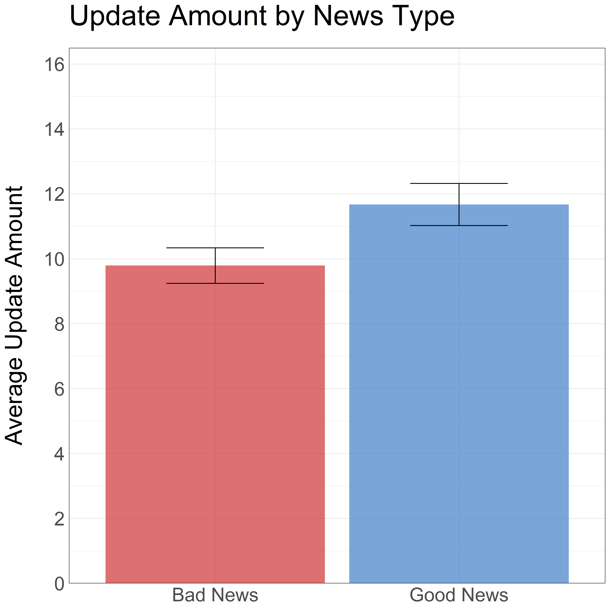
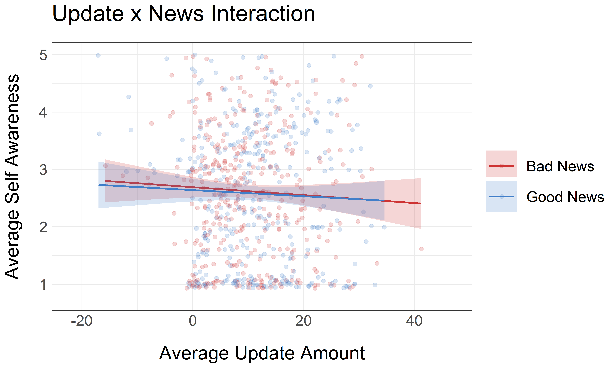
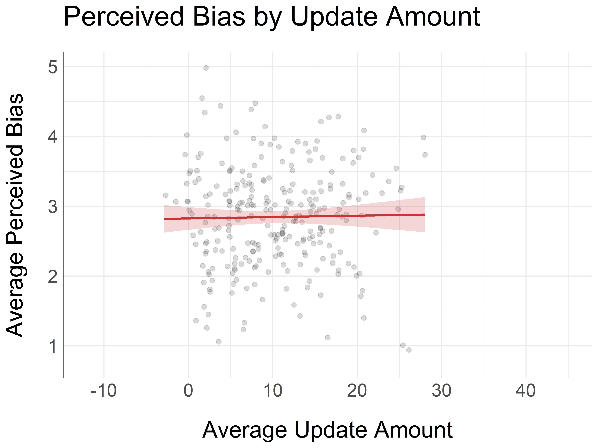
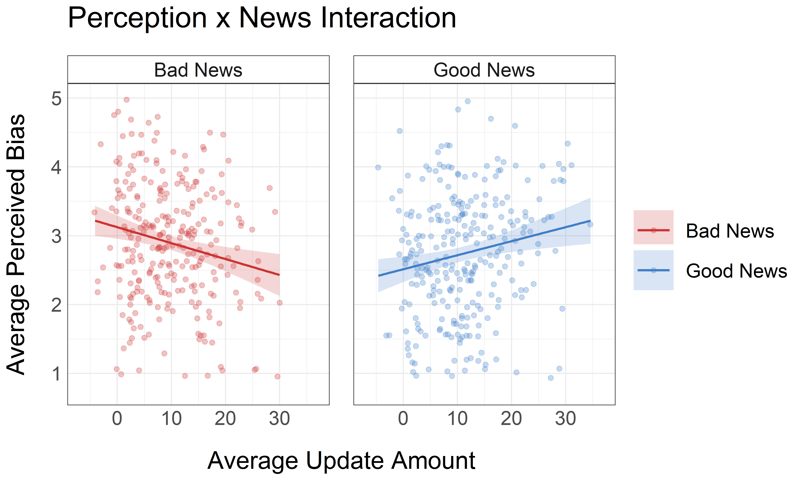

Self Awareness Processes in Motivated Reasoning
Clint McKenna
February 15th, 2023
- Poor introspective access
- Better than average/myself effects
- Bias Blindspots
- Poor self-knowledge
Do people have access
to motivated reasoning
processes?
Alicke (1995, 2001); Kruger & Dunning (1999)
Nisbett & Wilson (1979); Pronin et al. (2002)
Nisbett & Wilson (1979); Pronin et al. (2002)
Optimistic Updating
People are motivated to selectively update beliefs
Sharot et al. (2011)
Optimistic Updating Metrics

Sharot et al. (2011)
Prediction: Introspective Account
More awareness when...
- More updating for good news
- Less/no updating for bad news
Similar self awareness and 3rd party perceptions
Prediction: Unaware Account
No awareness of differential updating
Differing self awareness and 3rd party perceptions
Study 1
Optimistic Updating
News Type predicted
average updating
amount
β = 2.85, p < .001
Error Bars 95% CI
Error Bars 95% CI
More updating predicts a greater reported awareness

β = .09, p < .001
Effect did not vary by News Type
β = -.01, p = .253
Study 2
2022 Midtern Election
News Type predicted
average updating
amount

β = 1.61, p < .001
Error Bars 95% CI
Error Bars 95% CI
No relation between updating and awareness
Effect did not vary by News Type

Study 3
Yoked Participant Perceptions
News Type predicted
average perceived
bias

β = -.16, p = .006
Error Bars 95% CI
Error Bars 95% CI
No main effect of updating on perceived bias

β = .0004, p = .929
Effect was moderated by News Type

β = .04, p < .001
Effect was moderated by News Type

β = .04, p < .001